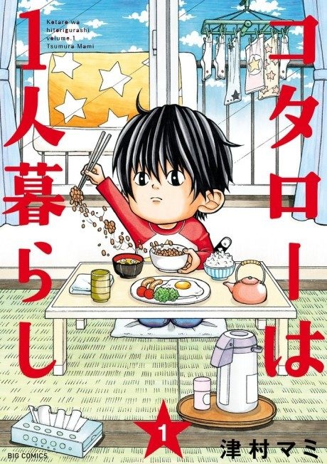

Anime
Anime
Manga2022 · Comedy, Drama, Slice of Life
Kotaro Lives Alone
コタローは１人暮らし
AniList8.1
Animeter—
Episodes10 ep
MangaUnclear
Is it worth pushing through?
Built from what visitors report across all 10 episodes.
Loading reports…Checking what other people said about this one.
Sign in with your email at the top of the page to add your report.